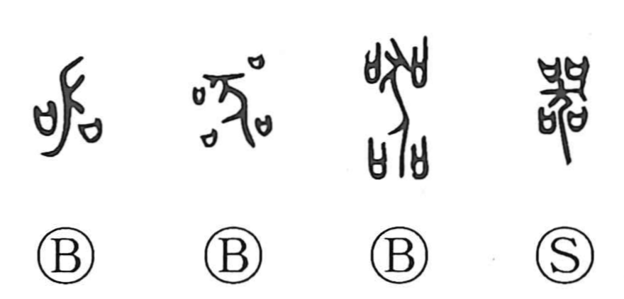

器

Kun: utsuwa | On: ki
vessel ・ container ・ instrument ・ tool ・ ability ・ capacity
Explanation
器 brings together four 口 around 犬, a dog. Each 口 is a vessel containing a prayer. The dog is a sacrificial animal used to purify them, and the early forms show it as having been killed for the rite. 器 names the vessels made clean and fit for ceremonial use. The older forms preserve 犬 clearly.
These were vessels for worship, funerary observance, and formal ritual. The meaning later broadened to containers, implements, and equipment of many kinds.
A vessel has a capacity and is suited to a particular use. Applied to a person, 器 therefore describes ability, scope, or the capacity to fulfil an important role. The physical vessel becomes a way of judging what someone can hold or accomplish.